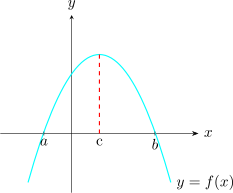
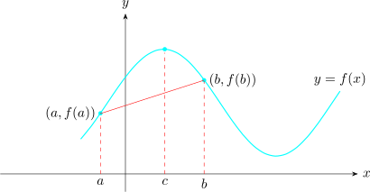
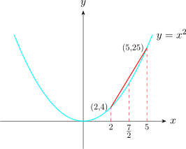

2.8 Mean Value Theorems
The mean value theorem (MVT) is used to prove important concepts in differential calculus.
2.8.1 Rolle’s Theorem
Let \(f\) be continuous on the close interval \([a,b]\) and differentiable on the open interval \((a,b)\). If \(f(a) = f(b)\) then \(\exists \) at least one number \(c \in (a,b)\) at which \(f'(c) = 0\).

Let \(f(x) = (x - 1)(x - 2)\). Then \(f(1) = f(2) = 0 \hspace {0.2cm}\exists \) a point \(c\in (1,2)\ni f'(c) = 0\).
Note. \(f(x) = (x - 1) (x - 2) = x^2 - 3x + 2\)
\(f'(x) = 2x - 3\)
\(f'(c) = 2c - 3 = 0\)
\[\implies \hspace {0.5cm} c = \frac {3}{2}\in (1,0)\]
2.8.2 Mean Value Theorem
Let \(f\) be a continuous on a closed interval \([a,b]\) and differentiable on the open interval \((a,b)\). Then \(\exists \) at least one number \(c\in (a,b)\) such that \[f'(c) = \frac {f(b) - f(a)}{b - a}\]

Let \(f(x) = x^2\hspace {0.2cm} , \hspace {0.2cm} a = 2\) and \(b = 5\). Then \[\frac {f(b) - f(a)}{b - a} = \frac {f(5) - f(2)}{5 - 2} = 7\] Since \(f\) is continuous in the closed interval \([2,5]\), and differentiable in the open interval \((2,5)\) by the (MVT) \(\exists \) at least one point \(c \in (2,5)\) such that \[f'(c) = 7\] Now, \(f'(x) = 2x\)
\(\implies \hspace {0.5cm} f'(c) = 2c = 7 \implies c = \frac {7}{2}\in (2,5)\).

The mean \(-\) value theorem can be put in so many useful forms.
For example multiplying through by \((b - a)\) yields, \[f(b) = f(a) + (b - a) f'(c)\hspace {0.2cm} , \hspace {0.2cm} c \in (a,b)\]
A single replacement of \(b\) by \(x\) yields \[f(x) = f(a) + (x - a) f'(c)\hspace {0.2cm}, \hspace {0.2cm} c \in (a, x)\]
Solution.
Let \(f(x) = \sqrt [6]{x}\hspace {0.3cm}\) i.e \(\hspace {0.3cm} f(x) = x^{1/6}\).
Then we take \(a = 64\) and \(b = 65\). Now, note that the this function is continuous on the closed interval \([64,65]\) and is differentiable in open interval \((64,65)\). \[f'(x) = \frac {1}{6}x^{-5/6}\]
Applying (MVT) we have \[f(65) = f(64) + (65 - 64)f'(c)\hspace {0.2cm}, \hspace {0.2cm} c \in (64,65)\]
\[f(65) = f(64) + (65 - 64)\Big (\frac {1}{6}c^{-5/6}\Big )\]
We approximate \(c = 64\).
\begin {align*} \text {Thus}\hspace {0.5cm} \sqrt [6]{65} & = \sqrt [6]{64} + 1 \times \frac {1}{6}\Big ( 64^{1/6}\Big )^{-5}\\ & = 2 + \frac {1}{6} \times 2^{-5}\\ & = 2 + \frac {1}{6}\times \frac {1}{32}\\ & = 2.00521\\ \end {align*}
Use the mean value theorem to show that \(\hspace {0.2cm} \sin x < x\hspace {0.2cm}\) for \(x>0\).
Proof.
Recall that \(\sin x \leq 1 \hspace {0.2cm} \forall x \in \mathbb {R}\). Thus, it is obvious that \(\sin x <x\) when \(x> 1.\)
Now we consider the case where \(0< x \leq 1\). Let us take \(f(x) = \sin x \) with \(a = 0\) and \(b = 1\) and applying the formula \[f(x) = f(a) + (x - a) f'(c)\hspace {0.3cm},\hspace {0.3cm} c\in (0, x)\hspace {0.3cm} \cdots \cdots \cdots \hspace {0.3cm} (I)\] \[f'(x) = \cos x \implies f'(c) = \cos c\] Thus, using \((I)\) we have \[\sin x = \sin 0 + (x -0) \cos c = x\cos c \hspace {0.3cm} , \hspace {0.3cm} c \in (0,x)\] \[\text {i.e}\hspace {0.3cm} \sin x = x \cos c\] Since \(0 < c < x \leq 1, \hspace {0.3cm} \cos c < 1\) thus, \(x\cos c < x\). Therefore, \(\sin x < x\). \[\implies \hspace {0.2cm} \sin x < x\hspace {0.3cm} \forall x > 0.\] □
2.8.3 Generalized Mean Value Theorem
If \(f(x)\) and \(g(x)\) are continuous on the closed interval \([a,b]\) and if \(f'(x)\) and \(g'(x)\) exist and \(g'(x) = 0\) everywhere on the interval except possibly at the end points, then \(\exists \) at least one point \(c\in (a,b) \ni \) \[\frac {f(b) - f(a)}{g(b) - g(a)} = \frac {f'(c)}{g'(c)}\hspace {0.3cm} \cdots \cdots \cdots \hspace {0.3cm} (II)\] Note that for the case \(g(x) = x\), then the theorem becomes the MVT.
2.8.4 Extended Mean Value Theorem
If \(f(x)\) and its \((n-1)\) derivatives are continuous on the closed interval \([a,b]\), and if \(f^n(x)\) exists everywhere on the interval except possibly at the end points, then \(\exists \) atleast on point \(c\in (a,b) \ni \) \[f(b) = f(a) + \frac {f'(a)}{1!}(b - a) + \frac {f''(a)}{2!}(b - a)^2 + \cdots \cdots + \frac {f^{(n-1)(a)}}{(n-1)!}(b - a)^{n-1} + \frac {f^n(a)}{n!}(b - a)^n\hspace {0.3cm}\cdots \cdots \hspace {0.2cm} (III)\]
\((III)\) is called the Taylor’s formula with the remainder \[R_n = \frac {f^n(a) (b - a)^n}{n!}\] when \(b\) is replaced with the variable \(x\), \((III)\) becomes \[f(x) = f(a) + \frac {f'(a)}{1!}(x - a) + \frac {f''(a)}{2!}(x - a)^2 + \cdots \cdots + \frac {f^{(n-1)(a)}}{(n-1)!}(x - a)^{n-1} + \frac {f^n(a)}{n!}(x - a)^n\hspace {0.3cm}\cdots \cdots \hspace {0.2cm} (IV)\] for some \(c \in (a,x)\).
\((IV)\) is called the Taylor’s series with the remainder \[R_n(x) = \frac {f^n(a) (x - a)^n}{n!}\]
When \((a)\) is replaced by 0 in \((IV)\) we have the Maclaurin’s series with the remainder \[R_n(x) = \frac {f^n(0) (x )^n}{n!}\]
i.e \[f(x) = f(0) + \frac {f'(0)}{1!}x + \frac {f''(0)}{2!}x^2 + \cdots \cdots \cdots + \frac {f^{(n-1)(0)}}{(n-1)!}x^{n-1} + \frac {f^n(a)}{n!}x^n\]
Note that \(\displaystyle {R_n(x) = \frac {f^n(0)}{n!}x^n}\) is a function of \(x\).
Questions on this section
Stuck on something here? Ask below and it stays attached to this topic.